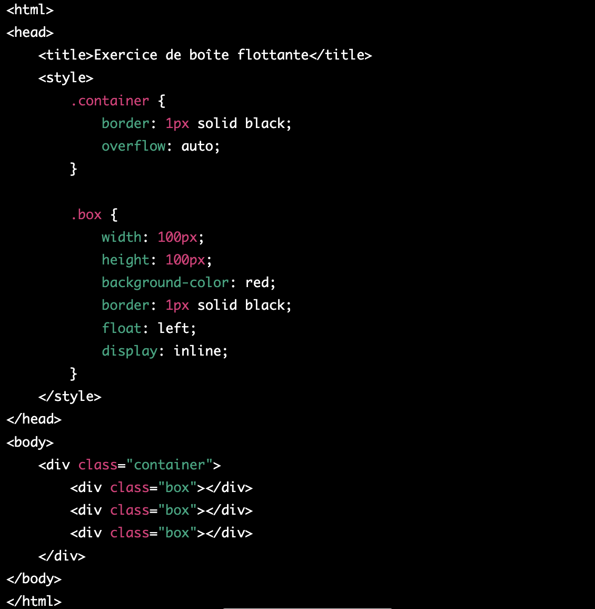

Créer une page web avec HTML et CSS
Dans cet exercice, nous allons créer une page web simple en utilisant HTML et CSS. Nous allons créer une structure de base pour la page, ajouter du texte, une image et des styles CSS pour personnaliser l'apparence de la page.
Voici les étapes à suivre pour créer la page :
- Créez un fichier HTML et nommez-le "index.html".
- Dans le fichier HTML, créez une structure de base en ajoutant les balises <html>, <head> et <body>.
- Dans la balise <head>, ajoutez une balise <title> et donnez un titre à votre page.
- Dans la balise <body>, créez un en-tête <header> et ajoutez-y un titre <h1> avec le nom de votre page.
- Ajoutez un paragraphe <p> dans la balise <body> pour décrire brièvement le contenu de votre page.
- Ajoutez une section <section> dans la balise <body> pour le contenu principal de votre page.
- Dans la section, ajoutez une image en utilisant la balise <img> avec la source de l'image que vous souhaitez afficher.
- Ajoutez un sous-titre <h2> et quelques paragraphes <p> pour décrire l'image ou le contenu principal de votre page.
- Dans la balise <head>, ajoutez une balise <style> pour ajouter des styles CSS à votre page.
- Dans la balise <style>, ajoutez des styles CSS pour personnaliser l'apparence de votre page, par exemple, changez la couleur du texte, la couleur de fond, la police,
L'objectif de cet exercice est de comprendre comment utiliser la balise div pour diviser une page web en sections logiques et comment centrer une div dans une page en utilisant CSS.
Voici les étapes à suivre pour créer la page :
- Créez un fichier HTML et nommez-le "index.html".
- Dans le fichier HTML, créez une structure de base en ajoutant les balises html, head et body.
- Dans la balise head, ajoutez une balise title et donnez un titre à votre page.
- Dans la balise body, créez une div avec l'identifiant container.
- À l'intérieur de la div container, ajoutez deux autres div avec les identifiants header et content.
- Ajoutez du texte dans la div header et du contenu dans la div content.
- Dans la balise head, ajoutez une balise style pour ajouter des styles CSS à votre page.
- Dans la balise style, ajoutez à la div container la régle suivant pour centrer la div container dans la page.
width: 80%;
margin: 0 auto;
L'objectif de cet exercice est de comprendre le principe de boîte flottante utilisant la propriété float:left associée à la propriété display: inline
- Tout d'abord, créez un nouveau document HTML et ajoutez le code suivant :

- Dans ce code, nous avons créé une classe .container pour contenir les boîtes flottantes et une classe .box pour représenter les boîtes elles-mêmes.
- Nous avons également ajouté les propriétés float:left et display: inline à la classe .box. Cela permettra aux boîtes de flotter à gauche les unes des autres, tout en restant alignées sur une seule ligne.
- Enfin, nous avons ajouté une propriété overflow: auto à la classe .container. Cela garantit que la boîte conteneur s'ajustera à la hauteur des boîtes flottantes, même si leur hauteur est différente.
- Maintenant, enregistrez ce code et ouvrez-le dans votre navigateur. Vous devriez voir trois boîtes rouges flotter à gauche et s'aligner sur une seule ligne à l'intérieur de la boîte conteneur.
- Pour voir comment la propriété float:left affecte les éléments, essayez de la supprimer de la classe .box et de recharger la page. Vous remarquerez que les boîtes ne flottent plus et s'alignent les unes sous les autres.
- Vous pouvez également jouer avec les propriétés de largeur et de hauteur pour voir comment elles affectent la disposition des éléments.